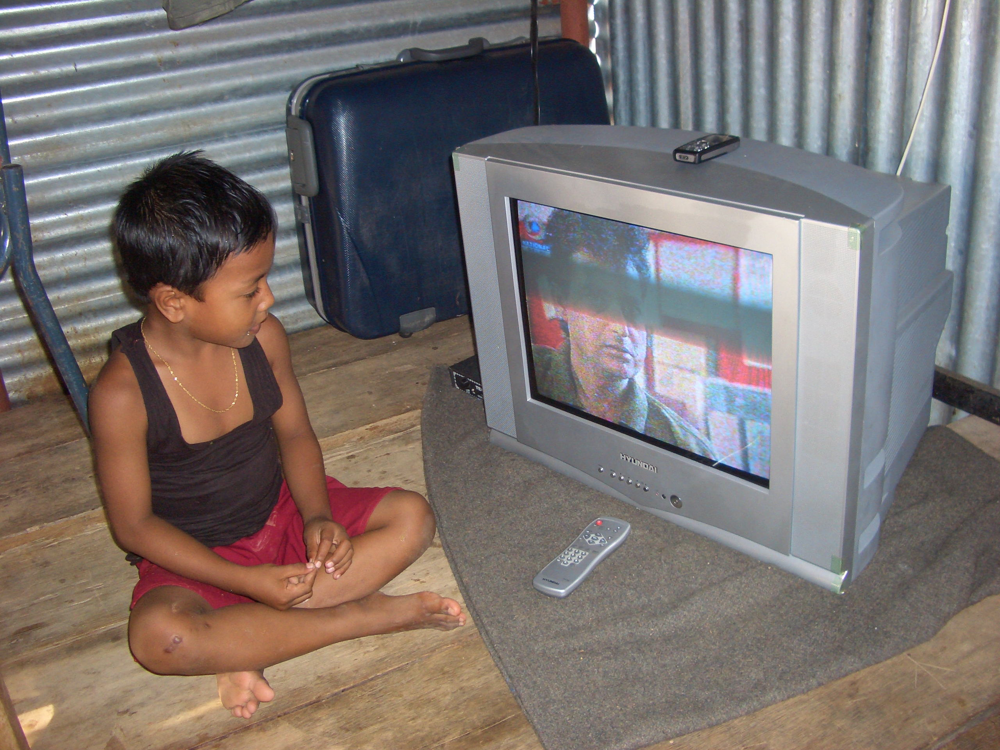

- Title Page
- Introduction
- The Islands and the Anthropologist
- Tsunami and First Response
- Wading In
- Second Tsunami
- In Search of Axes
- Steering a Sustainable Course
- Steering Committee
- Exchange Visit
- Nirnay Means Decision
- Up and Running
- Caritas Leans In
- Singh Sounds a Warning
- Midcourse Correction
- The SOPHIA Experiment
- Taking Stock
- SOPHIA Reports
Singh Sounds a Warning
In March 2006, Singh returned to the Nicobars for a 10-week field stay. He had been away only five months, but saw what he considered alarming changes. The traditional Nicobarese culture seemed to be fast disappearing, victim of humanitarian aid and native opportunism. The economic changes were most startling. Free rations, cash compensation payments, and cash-for-work programs had undermined the old subsistence economy. With food on the table and government checks in the bank, there was no urgent need to fish, dig gardens, raise pigs, or plant coconuts. Only a quarter of the coconut and cashew saplings that the government had provided free of cost had been planted, Singh reported. The Nicobarese seemed uninterested in doing the work, even though they would be paid for it.[54]
Unaccustomed to handling money, many Nicobarese turned their checkbooks over to immigrant traders who were happy to sell them a wide range of consumer goods at inflated prices: cellphones, motor bikes, designer clothes, Bollywood films, ceiling fans, whiskey and rum. When the government froze Nicobarese bank accounts in an attempt to put an end to the buying spree, Indian moneylenders offered loans against future prospects.[55] The Nicobarese had entered the global market flush with cash, but, Singh feared, would soon find themselves debtors.[56]
Nicobarese and goods purchased with aid dollars
© Aftermath-The Second Flood, Golden Girls Filmproduktion, 2014
Singh also saw changes in social organization. The authority of the kamuanse, or extended family, had been strained by the loss of so many elders in the tsunami. Now it had been subverted, though inadvertently, by the Indian government. Seeking to compensate the Nicobarese for their loss of kin, the government issued payments not to the larger kamuanse, but to smaller “nuclear” families that had formerly had no independent standing. Similarly, payments for losses of coconut plantations, boats, and houses often went to people who had no traditional ownership of the resources, only usage rights. The plans drawn up for new, government-built housing also emphasized small family groupings. In these ways, the traditional authority of the extended family gave way to more “modern” ideas of individual agency.
The slide into opportunism was most evident in the rise of “tsunami captains,” young, enterprising Nicobarese males who initially came forward to help organize the delivery of tsunami aid. Operating outside the reach of the kamuanse and Tribal Council, some of the more ambitious captains later began trafficking in goods, services, and influence with NGOs and their contractors who, by 2006, were gaining more direct access to the islands.[57] Over gifts and gab, the tsunami captains and the NGOs quickly found they had mutual interests. Singh hinted at corruption among these tsunami captains, whom he saw as a direct threat to the authority of SIF’s partners, the Tribal Council and NYA.

© Simron Singh
A villager with new products received through aid
Singh minced no words. The Nicobarese were becoming aid dependent and lazy, he reported. They watched TV and wore Ray-Ban glasses. They spent their money recklessly, with no thought to savings. They demanded pay for cooking their own meals. They argued and fought among themselves. None of the old ceremonies had been held since the tsunami. Alcoholism was rampant; in fact, two members of the Nicobarese delegation to Vienna in September had become addicted to alcohol over the winter. [58]
Singh was worried. How could SIF make progress with sustainable development under these conditions? Could the Tribal Council and NYA overcome the blandishments of the tsunami captains? Would SIF be ousted as Oxfam had been six months earlier? Was there any hope for the old culture’s survival? In his view, SIF’s work was at an impasse. In a report to the SIF Steering Committee in advance of its July 2006 meeting, Singh recommended that SIF suspend its activities for up to a year, saying, “The turbulent socio-political conditions the society now faces … are not conducive for any dialogue in the direction of a self-reliant and sustainable future.”[59]
Scientist’s Dilemma.Though Singh was dispassionate in his report to the Steering Committee, privately he was distraught. The competing claims of scientific neutrality, friendship, and humanitarian engagement weighed on him; in fact, his quandary became the subject of an article titled “The Scientist’s Dilemma,” published that month in Science magazine.[60] As their culture slipped away and the Nicobarese seemed not to care, Singh felt betrayed.
Even Rasheed, Singh’s friend, seemed to have abandoned the cause of sustainable development. “Rasheed said, ‘This is politics,’” remembers Singh. “’These are my people and they need things now. How can I stop them? How can I tell them not to have a TV? How can I stop them to wear jeans or have Ray-Ban glasses? The SIF money is nothing. Look at the NGO money—they have millions. With that money we can develop the islands and make it into paradise. We can develop it and make a modern Nicobar.’”
Singh on challenges to his sustainable development model
Singh, to his dismay, had come to see humanitarian aid as the snake in the garden. “My world was slipping away,” he wrote later. “It was no longer a place of refuge and of reflexive calmness, but one wrought with responsibilities and several unsuccessful endeavours, and at the same time, desperation to keep my reputation as ‘an expert’ to outsiders and insiders.”[61] Heading into the SIF Steering Committee meeting on July 5, 2006, Singh had mixed feelings, but his colleagues in Vienna and around the world had confidence in his decision making. As his PhD thesis advisor Pernille Gooch told the Science reporter, “He’ll do the right thing.”[62]
[54] Information for much of this section is from Simron Jit Singh, “Field Report/Evaluation of the Situation in the Nicobars, March-May 2006,” in SIF files.
[55] Lundberg interview with Hass, op. cit.
[56] The Nicobarese themselves were aware of the potential for trouble in the new cash economy. As one woman told a documentary filmmaker, “Everybody is getting money from the government. Every village, every family. But when everybody gets the money, they only care about themselves anymore.” Source: Barth, Aftermath.
[57] By summer 2006, most NGOs had closed operations, but the several dozen that remained had become entrenched and were dealing more directly with local players. NGOs obtained more direct access to the Nicobars through oversight visits and service contracts with government, and aid workers reached out to tsunami captains in the villages. Venkat Ramanujam Ramani, “Gifts Without Dignity?,” pp. 12, 21.
[58] Simron Jit Singh, “Field Report/Evaluation of the Situation in the Nicobars, March-May 2006,” in SIF files; Lundberg’s interview with Singh; and the documentary film Aftermath (director, Barth). For a full account of the socio-political changes in the Nicobars after the tsunami see R. Venkat Ramanujam, Simron Jit Singh, and Arild Vatn, “From the Ashes into the Fire? Institutional Change in the Post-Tsunami Nicobar Islands, India,” Society & Natural Resources: An International Journal, 25:11, 2012, pp. 1152-1166.
[59] Ibid Ramanujam et al.
[60] Richard Stone, “After the Tsunami: A Scientist’s Dilemma,” op cit.
[61] Simron Jit Singh, “Reflections of an Engaged Anthropologist After the Tsunami,” Andaman Chronicle, January 8, 2009. See: http://www.andamanchronicle.net/index.php?option=com_content&view=article_id_139:community-newspaper-hamara-nicobar-second-edition134&catid=21&Itemid=145
[62] In Richard Stone, “After the Tsunami: A Scientist’s Dilemma,” op cit.
Video - http://www.aftermath-thesecondflood.net/